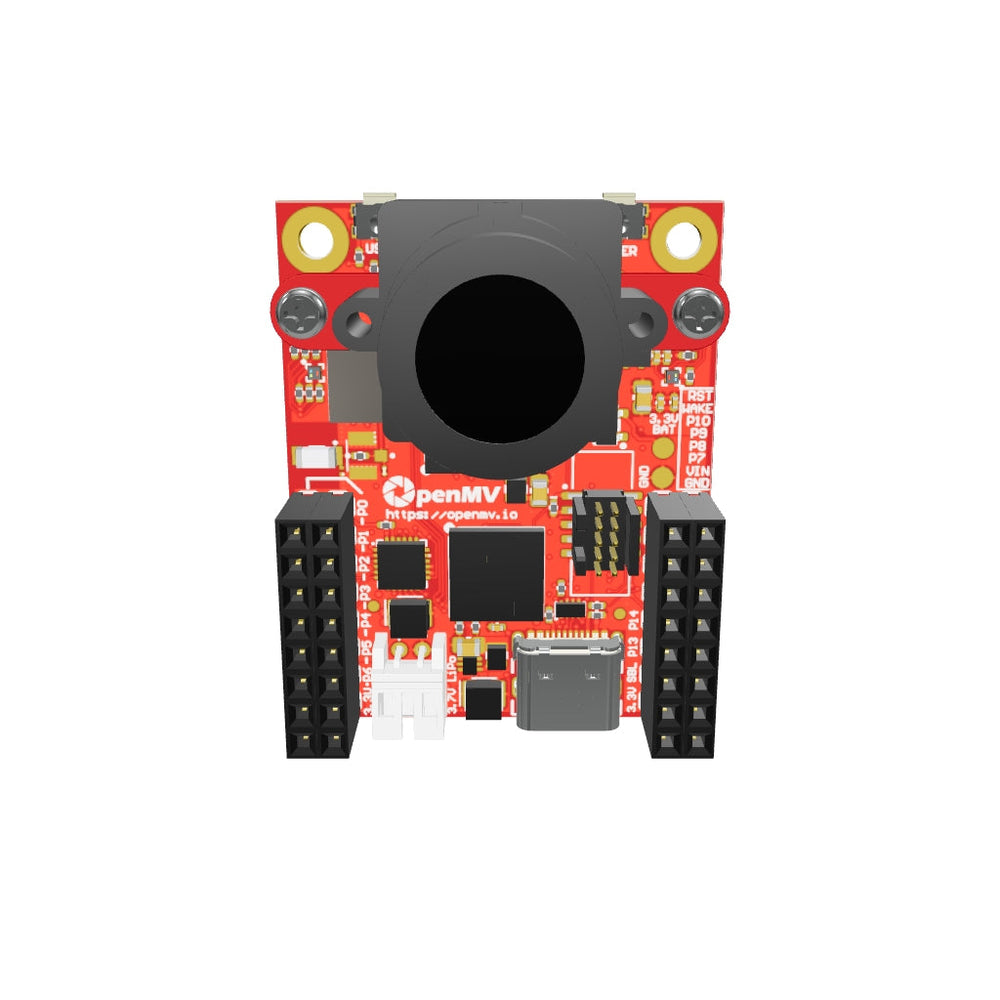
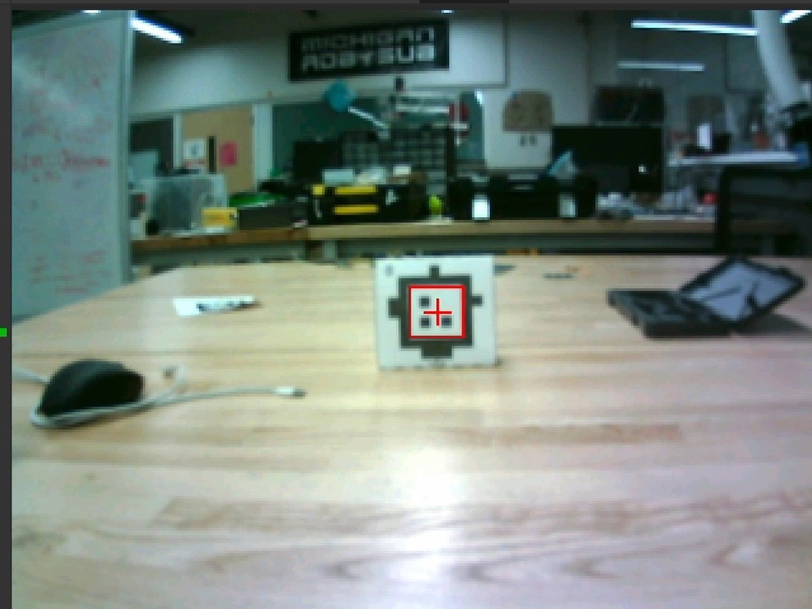

AprilTag Odometry Verification System
An external visual reference for robot odometry, built with AprilTag detection, a custom vision pipeline, and a camera interface PCB.
Overview
Wheel encoders and inertial sensors can track a robot continuously, but wheel slip and sensor noise can cause its estimated position to drift. This project uses a known AprilTag as an independent visual checkpoint to help identify that drift.
The OpenMV camera measures its position and orientation relative to the tag. Those observations form the starting point for a pipeline that will compare the visual reference with the robot’s odometry.
The current prototype
The recorded test demonstrates tag detection and live camera-relative measurements. The prototype converts translation into millimeters, calculates straight-line distance and bearing, and reports pitch, yaw, roll, and frame rate.


From camera to robot
- Detect a known landmark. Estimate the camera’s translation and rotation relative to an AprilTag.
- Align the measurements. Account for camera placement, tag position, and timing to express observations in the robot’s coordinate system.
- Check for drift. Compare reliable observations with the primary odometry estimate before considering a correction.
What’s next
The remaining work includes the camera-to-robot communication path, the custom interface PCB, camera calibration, and controlled movement tests. These will establish how reliably the full system can identify odometry drift.